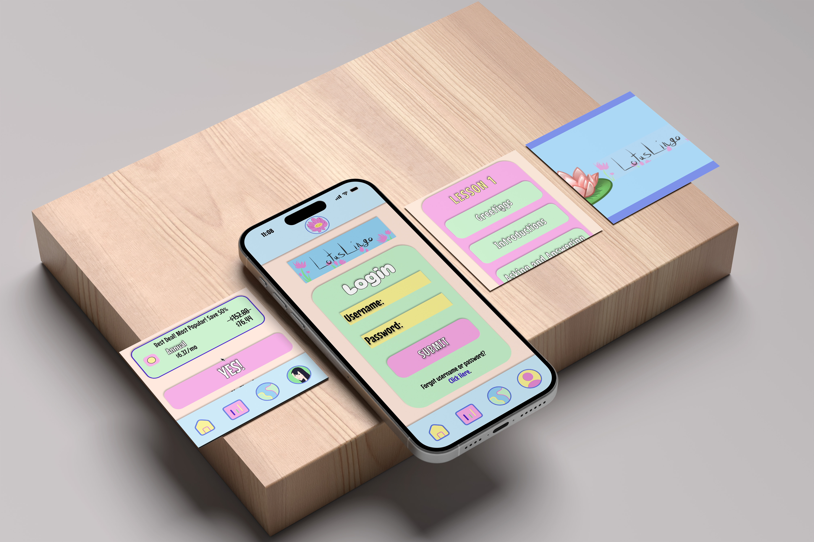
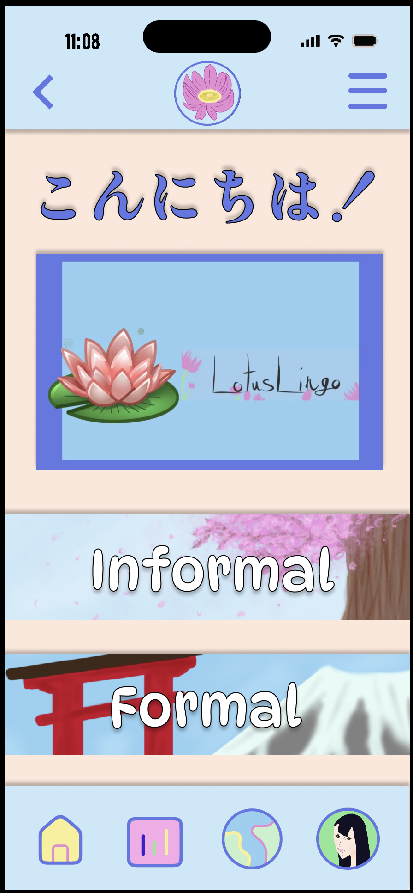
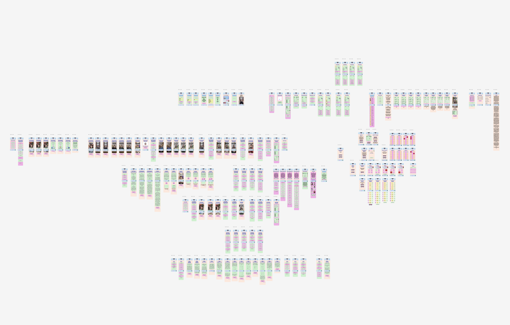
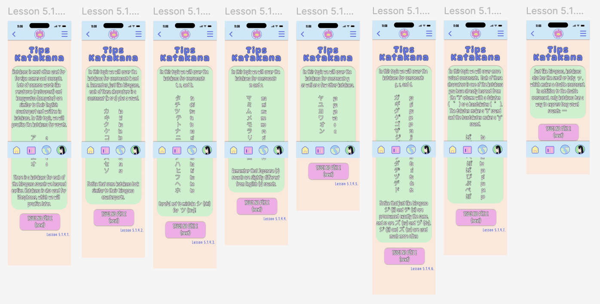
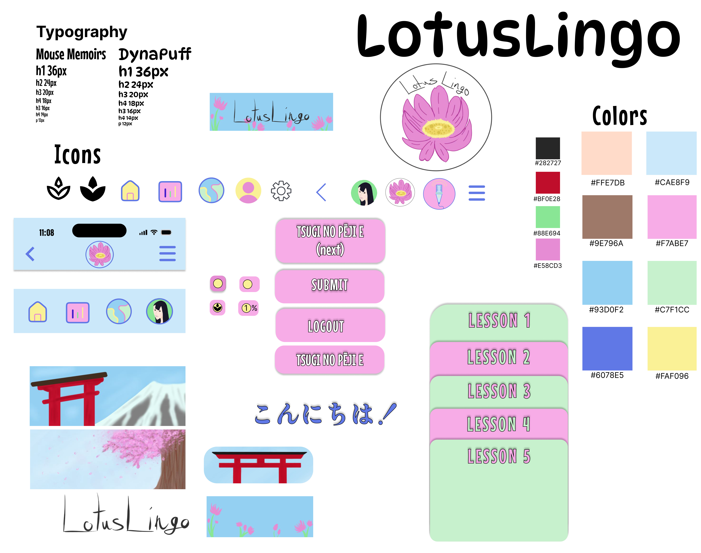

SOFTWARE
Figma
Adobe Illustrator
Adobe Photoshop
ROLE
UX/UI Designer
Mobile App Designer
DELIVERABLES
Mobile App Concept Development
UX/UI Design
Information Architecture
Wireframes & Hi-Fi Prototypes
Interactive User Flows
Brand Identity & Visual System
TOOLS & CREDITS
Teuida (reference imagery used for educational purposes)
Envato Elements (licensed subscription assets & mockups)
PROJECT OVERVIEW
Lotus Lingo is a conceptual mobile language-learning application created as an academic UX/UI design project. The app was designed to explore how visual design, structured lessons, and interactive experiences can support users as they learn a new language. All included imagery and language-learning content were used solely for educational purposes as part of the course project.
The goal was to design a complete language-learning ecosystem that guides users from account creation through daily practice, lesson progression, and community engagement. The project included more than 100 designed screens covering onboarding, user profiles, settings, lesson modules, progress tracking, games, rewards, premium features, and additional app functionality.
DESIGN APPROACH
The visual direction combines playful illustration, bright colors, and approachable interface patterns to create an encouraging learning environment. The design system was developed around accessibility and engagement, using consistent navigation, visual feedback, and interactive components to help users feel motivated throughout their language-learning journey.
The app architecture was organized around five primary learning modules focused on reading, writing, speaking, and comprehension. Each lesson system was designed with structured practice activities, progress indicators, review sections, and personalized learning tools. Additional features including calendars, user statistics, friends, community interaction, achievements, music, account management, and premium options were created to demonstrate how a complete mobile product experience functions beyond the core lesson content.
The featured screens demonstrate English-to-Japanese learning exercises, including Katakana lessons that introduce pronunciation, writing practice, and character recognition. The final prototype explores how thoughtful UX/UI design can transform educational content into an engaging and intuitive mobile experience.

The Lotus Lingo mobile app brings the completed design system together through a user-focused interface designed for learning and exploration. The final mockup showcases how the visual identity, interface components, and layout decisions work across multiple screens to create a consistent and engaging experience. Each design choice supports the app’s goal of making language learning feel approachable, intuitive, and culturally connected.

View Interactive PrototypeExplore Lotus Lingo through an interactive high-fidelity prototype designed to bring the complete app experience to life. Click through the screens to experience the app's navigation, features, content, and visual design as a connected digital experience.

The Lotus Lingo app concept map defines the information architecture and user journey before visual development began. The planning phase explored how users move through onboarding, lessons, practice activities, progress tracking, community features, and account management, ensuring the final interface was organized around a logical and engaging learning experience.

This high-fidelity prototype overview demonstrates the scale and structure of the Lotus Lingo mobile application. More than 100 screens were designed to create a complete user experience, including onboarding, lessons, profile management, settings, progress tracking, community features, rewards, games, and subscription options. The prototype focuses on creating a cohesive system where every interaction supports the user's learning journey.

This high-fidelity prototype showcases the Katakana lesson experience within Lotus Lingo. The lesson screens were designed to introduce Japanese characters through guided explanations, pronunciation examples, writing practice, and review activities. The interface system emphasizes clear progression, visual learning, and repeat practice to support users as they build confidence with a new writing system.

The Lotus Lingo design system establishes the visual foundation for the application through color, typography, interface components, and reusable design patterns. This system helped maintain consistency across educational content, navigation elements, user profiles, and interactive features throughout the app experience.